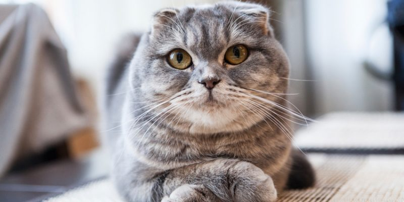
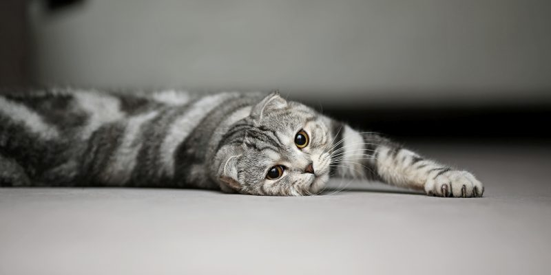
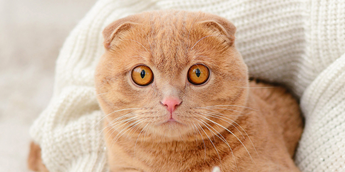
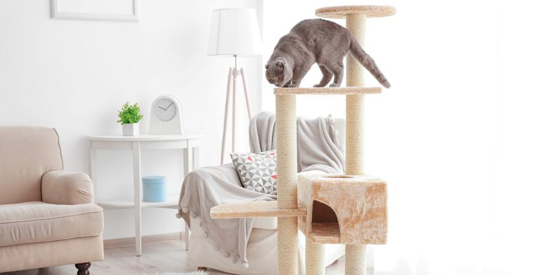
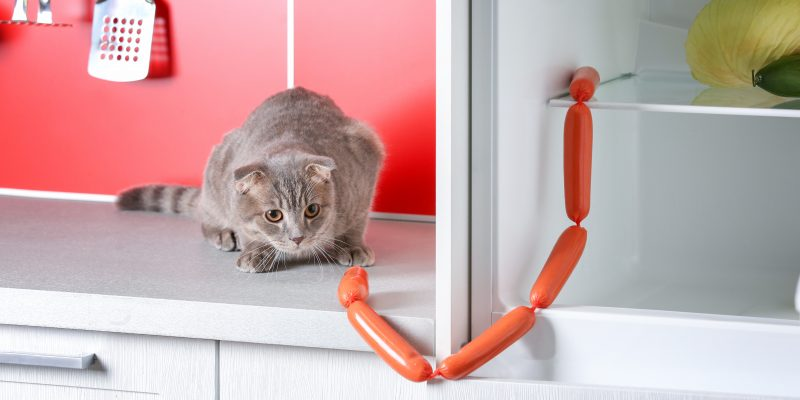
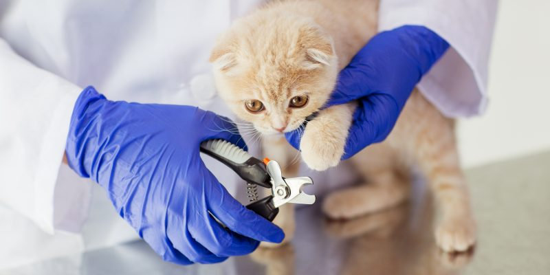
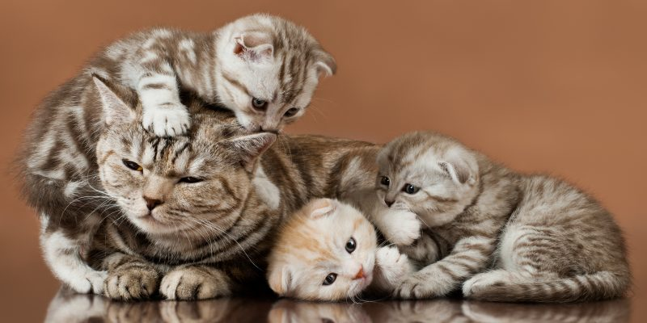

Вислоухая шотландская кошка
Как выглядят шотландская вислоухая кошка
У представителей этой породы приземистое тело с хорошо развитой мускулатурой. Лапы мощные и не слишком длинные. Шея короткая, голова довольно большая и округлая, с крепким подбородком и круглыми подушечками усов. Хвост обычно средний или длинный, заострённый к концу. Шерсть у шотландцев короткая, прямая, густая и мягкая. Окрасы различные —сплошные (например кремовый, белый, чёрный, голубой), двухцветные, табби, черепаховые, дымчатые и другие.Характерная черта скоттиш-фолдов — небольшие прижатые к голове уши, которые загнуты вперёд и немного свисают.Это отличие вызвано генной мутацией, в результате которой хрящи, в том числе и ушные, становятся мягче.

Какой характер у шотландской вислоухой кошки
Скоттиш-фолды отличаются добрым, спокойным и уравновешенным характером. Их образ жизни достаточно размеренный, гиперактивность обычно им не свойственна. Такого питомца вы вряд ли будете постоянно заставать за попыткой вскарабкаться на шкаф и по шторам или просто резво носящимся по комнатам. Но это вовсе не значит, что шотландские вислоухие кошки абсолютно пассивны и ведут себя как плюшевые игрушки. От природы они достаточно любопытны и с энтузиазмом исследуют всё, что их окружает.


Как шотландские вислоухие кошки уживаются со взрослыми и детьми
Представители этой породы очень преданны и искренне привязываются к людям. Считается, что они выбирают один объект обожания, но это далеко не всегда так. Многие шотландцы одинаково тепло относятся ко всем членам семьи и выделяют кого-то особенно только по настроению. Скоттиш-фолды охотно проявляют свои эмоции, любят общаться с помощью мяуканья и мурлыканья. Демонстрируя привязанность, они могут буквально по пятам ходить за человеком по всей квартире. А в попытках завладеть вниманием нередко проявляют настойчивость и своенравность. Большинство шотландских вислоухих кошек не очень любят, когда их тискают и берут на руки. Хотя по настроению вполне могут помурлыкать на коленях. Против поглаживаний и других ласк обычно ничего не имеют против. В общении с детьми мурлыки терпеливы и спокойны. Агрессию проявляют редко, а чтобы её спровоцировать, нужно очень постараться. Слишком весёлые и шумные игры им не всегда по душе, так что котики стараются избегать подобных активностей и отсиживаться в стороне.
Как шотландские вислоухие кошки уживаются с другими питомцами
С собаками и другими кошками скоттиш-фолды живут вполне комфортно.При этом они соблюдают нейтралитет и не пытаются навязать своё превосходство в агрессивной форме. Но подружиться с хомячком или попугайчиком им може помешать охотничий инстинкт.
Чем болеют шотландские вислоухие кошки
Скоттиш-фолды отличаются достаточно крепким здоровьем. Однако есть несколько заболеваний, которые генетически характерны именно для этой породы. Остеохондродисплазия (ОХД) — порок развития хрящевой и костной тканей, который приводит к замедлению их роста. Эта болезнь считается неизлечимой, так что при ней назначается только поддерживающая терапия. Поликистоз почек (ПКП) — заболевание, при котором в почках образуется множество полых опухолей с жидким содержимым (кист). В результате поражённые органы не в полной мере выполняют свою функцию. Кардиомиопатия — болезнь, при которой нарушается нормальная работа сердечной мышцы.Также шотландские вислоухие кошки могут страдать и от болезней, характерных для большинства мурлыкающих питомцев. В их числе проблемы с мочеполовой системой, кожные и другие заболевания.
Какие условия содержания требуются шотландским вислоухим кошкам
Представителям этой породы будет вполне комфортно в стенах обычной квартиры. Главное — выделить им собственное уединённое место, где кошка сможет проводить время наедине с собой. При этом лежанку нужно расположить вдали от сквозняков, опасных для скоттиш-фолдов.

Для безопасности животного желательно установить на окна специальные защитные сетки. Если их не будет, кот может упасть из окна при попытке поймать птицу или падающий лист.Позаботиться стоит и о кошачьем досуге. Помимо спального места и лотка, шотландцу обязательно нужна когтеточка. С её помощью он сможет приводить свои лапы в порядок и не будет посягать на вашу мебель.

Разнообразьте досуг своего питомца. Разнообразить жизнь шотландской вислоухой кошки помогут мячики, мышки и другие игрушки. Также можно установить целый игровой центр, который ещё и обеспечит дополнительные физические нагрузки для котиков и поддержит их физическую форму. Шотландцев можно назвать кошками-домоседами. Хотя если кот спокойно и комфортно чувствует себя на свежем воздухе, берите его на непродолжительные променады или выпускайте в собственный сад. При этом гуляющих скоттиш- фолдов нельзя надолго оставлять без присмотра.
Как кормить шотландских вислоухих кошек
Проще всего остановиться на готовых влажных и сухих кормах. Выбирать лучше из линеек проверенных брендов, ведь только качественные полнорационные корма обеспечивают животное всеми нужными белками, жирами, углеводами, микроэлементами и витаминами. В дополнение можно иногда давать полезные лакомства,которые не только помогают разнообразить меню, но и, например, способствуют очистке зубов животного. Подбирайте готовую диету с учётом особенностей животного — возраста, состояния здоровья и наличия хронических заболеваний, стерилизации, беременности и лактации. Другой вариант — натуральные продукты, такие как мясо и субпродукты, злаковые. Но обычная еда с человеческого стола для шотландцев под запретом. Она попросту не обеспечит организм кошек всем необходимым, а иногда и вовсе может представлять опасность для их жизни. Еда с нашего стола не подходит для кошек.

Решая, чем кормить скоттиш-фолда, учитывайте, к какому питанию он привык, пока жил у заводчика. Резкая перемена не пойдёт на пользу животному,к тому же котёнок может просто отказываться от непривычной еды. Даже если вы решите сменить рацион, делать это нужно постепенно. Нередко представители этой породы склонны к ожирению. Это нужно учитывать при составлении рациона. Не стоит перекармливать питомца, так как ожирение может привести к целому ряду проблем со здоровьем.
Как ухаживать за шотландской вислоухой кошкой
Густая шерсть этих животных нуждается в постоянном и тщательном уходе. Вычёсывать котиков нужно хотя бы пару раз в неделю. В периоды весенней и осенней линек желательно делать это каждый день. Ещё один важный момент — уход за ушами. Из-за необычного строения в ушных раковинах скапливается довольно много серы. Удалять её можно с помощью ватных тампонов и специальных лосьонов, которые продаются в зоомагазинах. Проводить эту процедуру нужно в среднем раз в неделю-две.Не забывайте регулярно стричь когти питомцу.

Также скоттиш-фолдам нужно регулярно, примерно раз в месяц, подстригать когти.Что касается купания, то исключительно домашним питомцам достаточно устраивать банный день раз в полгода или ещё реже, а любителям погулять — каждую пару месяцев.
На что обращать внимание при покупке шотландской вислоухой кошки.
Купить скоттиш-фолда можно через сайты объявлений, на выставке или в сертифицированном питомнике. Цена на котёнка зависит от многих факторов, в том числе региона (в столице нередко стоимость выше), родословной. Существенно влияет и класс животного. Так, «пет» — это котик для души, которому не светит выставочная карьера или участие в разведении. Цена на таких животных ниже, при этом они, как правило, стерилизованные. Следующий класс — «брид». Эти кошки — потенциальные производители, от которых можно ждать стоящее потомство. И, наконец, самый дорогой класс — «шоу». Эти животные имеют все шансы побороться за призовые места на выставках. Причём подтверждаться столь высокий статус должен не просто словами, а выставочными сертификатами. Ещё один важный момент — здоровье будущего питомца. Поэтому при выборе стоит внимательно осмотреть котёнка. Сильная худоба, залысины, блохи, слишком раздутое брюшко могут свидетельствовать о ненадлежащем уходе и недобросовестности заводчика. Кроме того, некоторые особенности поведения скоттиш-фолдов могут быть признаками генетического заболевания, которое поражает костные и хрящевые ткани. Так, если лапки и хвост малоподвижны, а сам котёнок не может нормально бегать и прыгать, от покупки лучше воздержаться. Обязательно узнайте о родителях котёнка.
